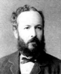

Georg Cantor
Georg Cantor wurde 1845 in St. Petersburg geboren. As er elf Jahre alt war, zog die Familie nach Deutschland; dort schloss er seine Schulbildung ab, wobei er eine grosse Begabung für Mathematik zeigte.
Cantor studierte 1862-1867 in Zürich, Göttingen und Berlin, unter anderem bei Leopold Kronecker, mit dem er zunächst eine freundschaftliche Beziehung hatte. Sein Traum wäre eine Stellung an der Universität Berlin gewesen, doch wurde er Professor in Halle, wo er über 40 Jahre tätig war.
Cantors Arbeiten verstiessen schon früh gegen alle Grundsätze Kroneckers. Seine erste Arbeit zu Mengen erschien 1874. Sie war nicht-konstruktivistisch, verwendete aktuale Unendlichkeit und war grundlegend neu und innovativ.
Neben mathematischen und philosophischen Studien widmete er sich auch der Literaturgeschichte. So vertiefte er sich in den alten Streit über die wahre Urheberschaft der Shakespearschen Stücke und lieferte bedeutende Beiträge zur frühen Geschichte der Mathematik in Indien. Er war damit einer der ersten, die erwogen, wie sich mathematisches Wissen von einer Kultur zur anderen ausbreiten konnte, also nicht an verschiedenen Orten unabhängig erfunden wird.
In einer Arbeit aus dem Jahre 1874 bewies Cantor die Abzählbarkeit der Menge aller algebraischen Zahlen und die Nichtabzählbarkeit der Menge aller reellen Zahlen und folgerte hieraus die Existenz der transzendenten Zahlen. Er benutzte dazu das noch heute nach Ihm benannte Diagonalverfahren.
Cantor zeigte 1878, dass die Ebene und allgemein der n-dimensionale Euklidische-Raum dieselbe Mächtigkeit haben wie die Zahlengerade. In dieser Angelegenheit gab es einen regen Briefwechsel mit Dedekind.
Grosse Verdienste erwarb sich Cantor durch die Gründung der Mathematikervereinigung, deren erster Vorsitzender er war.

The Mystery of the Aleph
A.D. Aczel